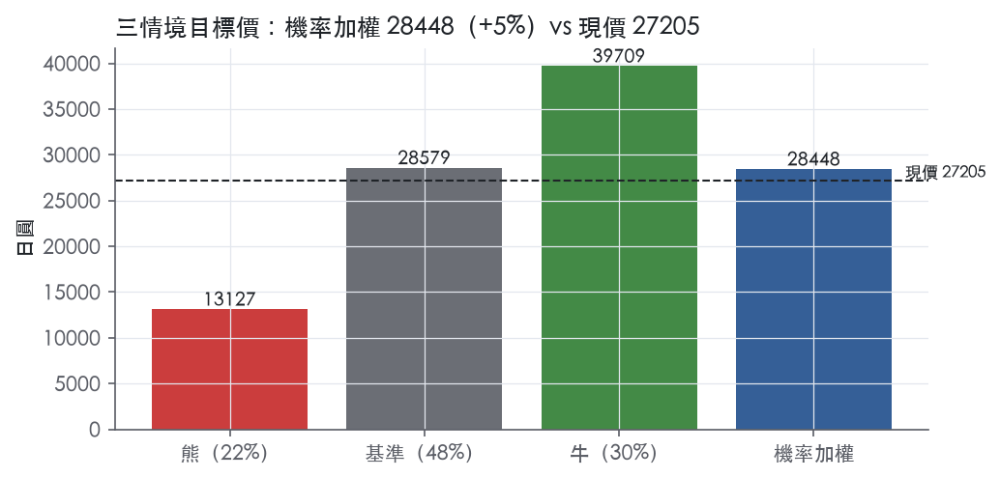
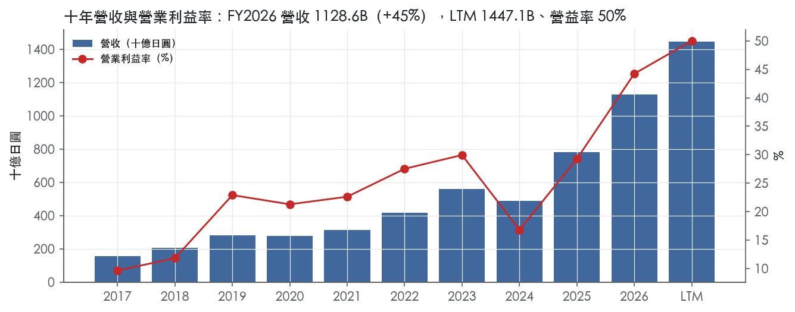
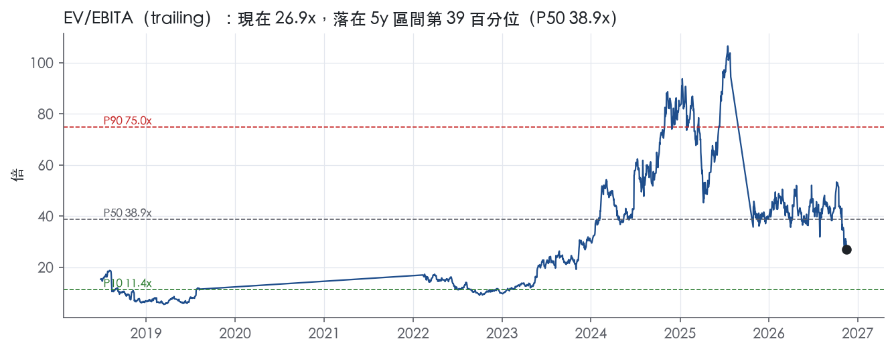
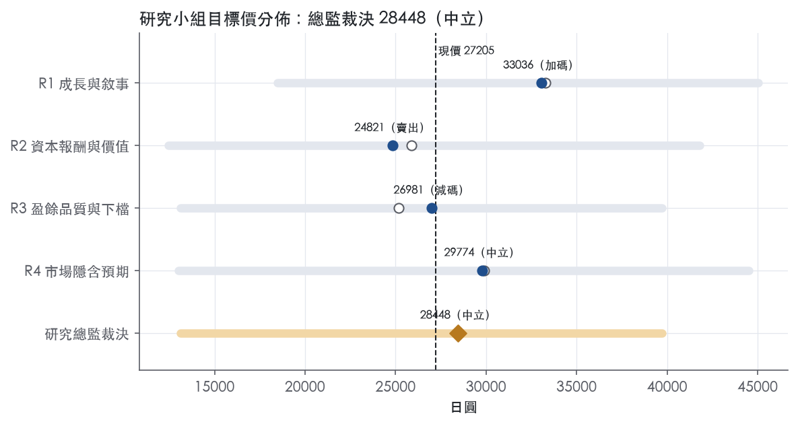
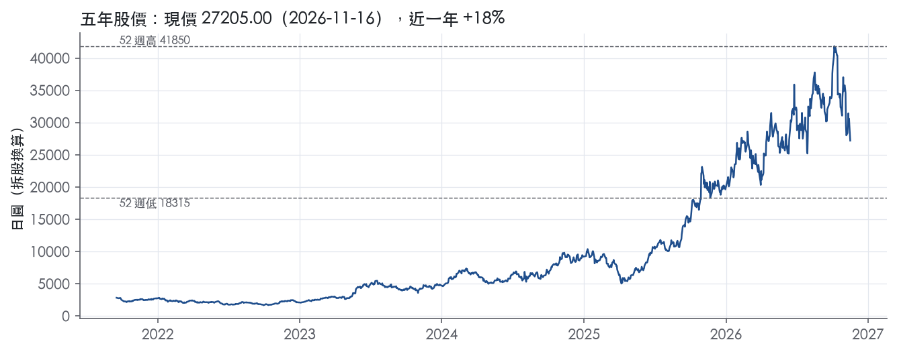

評等總表 › 未分類 › 6857.T
近端超標、第二年降速已入價：中性｜評等 中立｜目標價 28448
| 報告日 | 評等 | 目標價 | 當時股價 | 超額報酬 |
|---|---|---|---|---|
| 2026-11-16 | 中立 | 28,448 | 27,205 | -3.0% |
| 評等 | 中立（邊界，鄰近減碼） |
| 12 個月目標價 | 28448 日圓 |
| 現價 | 27205.00 日圓（2026-11-16） |
| 預期報酬 | 股價 +4.6%＋股息 0.3%＝總報酬 +4.9%；日股門檻 7.8%，超額 -3.0% |
| 估值方法 | EV/EBITA 17.0x，套在第 5–8 季的EBITA（也就是一年後的未來四季） |
| 三情境 | 熊 13127／基準 28579／牛 39709 |
| 研究流程 | 四位研究員兩輪辯論＋研究總監裁決 |
| 資料來源 | EDINET、TDnet、J-Quants、Yahoo、FRED（全免費） |
近端超標、第二年降速已入價：中性（研究總監裁決，四位研究員兩輪辯論後）
評等 中立（邊界，鄰近減碼）｜12 個月目標價 28448 日圓（總監三情境機率加權 28518 與研究員中位數 28378 各半）｜現價 27205.00（2026-11-16）
預期報酬：股價 +4.6%＋股息 0.3%＝總報酬 +4.9%。日股門檻 7.8%，超額 -3.0%，離減碼的分界不到三個百分點，屬邊界評等（落在其他級距的機率約三成）。
估值方法：EV/EBITA 17.0x，套在第 5–8 季的EBITA（也就是一年後的未來四季）。三情境：熊 13127（22%）／基準 28579（48%）／牛 39709（30%）。
什麼會讓研究總監改變看法：FY2028 期初計畫成長 >=15% 且營益率 >=50%：y2 回 20%、倍數改市場持平 19.9x，轉偏多；Q3 短信出現存貨評價損或前受金減少、或前五大客戶之一公開延後投資：熊機率上調、y2 轉負，轉偏空。
| 過去四季（實際，FY2027Q2） | 未來四季 | 第 5–8 季 | 第 9–12 季 | |
|---|---|---|---|---|
| 營收（B） | 1,447.1B | 2,054.8B | 2,260.3B | 2,328.1B |
| 營收成長 | 48.1% | 42.0% | 10.0% | 3.0% |
| 營業利益率 | 50.0% | 52.0% | 50.0% | 48.0% |
| EPS（日圓） | 787.93 | 1145.04 | 1217.35 | 1214.99 |
| EPS 成長 | 121.4% | 45.3% | 6.3% | -0.2% |
| 每股股息（日圓） | — | 0.00 | 0.00 | 0.00 |
| P/E（現價） | 34.5x | 23.8x | 22.3x | 22.4x |
| 股息殖利率（現價） | 0.3% | — | — | — |
過去四季為申報數字；預測為研究總監的假設、程式計算。倍數與殖利率都用現價計算，用來看現價對應各期獲利的高低。
| 情境 | 機率（歷史） | 故事 | 未來四季營收成長 | 第 5–8 季營益率 | 倍數 | 目標價 | 股價漲跌 |
|---|---|---|---|---|---|---|---|
| 熊 | 22%（19%） | 風險表第 1 條（設備投資週期反轉）由第 2 條（前五大約 50%）放大：FY2028 下半年起消化，固定費用去槓桿加存貨跌價，重演 FY2024，日圓走 145 路徑 | 28.0% | 38.0% | 14.0x | 13127 | -51.7% |
| 基準 | 48%（48%） | FY2027 超標、FY2028 上半年仍高於去年同期，Q5–Q8 成長降到一成、營益率五成，倍數隨前瞻成長降檔壓到帶 P75 | 42.0% | 50.0% | 17.0x | 28579 | 5.0% |
| 牛 | 30%（33%） | 市佔 65%、矽光子與 HBM 測試含量上升延長週期，FY2028 計畫給雙位數成長，營益率守 52% 不超 Q2 高點，日圓走 160 路徑，倍數取帶 P90 | 44.0% | 52.0% | 20.5x | 39709 | 46.0% |
目標價由程式依研究總監的驅動與倍數計算；機率由研究總監給定。括號內是歷史頻率：把這檔股票過去十年 12 個月報酬的波動形狀，置中在基準情境，結果落在各情境附近的比例。

四位研究員用不同方法各自估值，回應研究總監的質疑後交出第二輪，最後由總監逐點裁決。各研究員的主張見第七章，裁決理由見第八章，完整論證見《研究底稿》。
| 立場（一輪→二輪） | 加權目標價（一輪→二輪） | 評等（一輪→二輪） | 第二輪倍數 | 熊～牛目標價 | |
|---|---|---|---|---|---|
| R1 成長與敘事 | 看多→看多 | 33292→33036 | 加碼→加碼 | 23.0x | 18478～45037 |
| R2 資本報酬與價值 | 看空→看空 | 25882→24821 | 減碼→賣出 | 17.0x | 12466～41812 |
| R3 盈餘品質與下檔 | 看空→看空 | 25172→26981 | 賣出→減碼 | 17.0x | 13135～39717 |
| R4 市場隱含預期 | 中性→中性 | 29881→29774 | 中立→中立 | 17.0x | 13019～44493 |
| 研究總監裁決 | 中性 | 28448 | 中立 | 17.0x | 13127～39709 |
目標價由程式依各自的驅動與倍數計算；評等＝機率加權總報酬 − 日股門檻。
Advantest（愛德萬測試）是全球半導體測試機市場的龍頭廠商，產品線涵蓋SoC測試系統、記憶體測試系統、測試處理機（handler）與裝置介面（device interface）等機電相關設備，並提供半導體與模組的系統級測試（SLT）解決方案。公司的客戶是全球晶圓廠與IC設計公司，產品賣給需要在量產前驗證晶片良率與性能的半導體製造鏈。截至FY2026暦年，公司在半導體測試機市場的市佔率已由2024暦年的58%拉升到2025暦年的65%。公司2026年度前景展望指出，暦年2026年全球半導體市場在AI相關高性能半導體牽引下，有預測可能超過約1,000B日圓規模，半導體測試機市場也將因AI相關半導體產量增加及複雜度上升而創下歷史新高。公司本質上是一家把半導體後段製程「驗證關卡」做成設備生意的公司，客戶集中在資本開支敏感的晶圓代工與IDM，營收波動性天然地跟隨半導體資本支出週期。
公司FY2026起把報告分部由三個（半導體・部品測試系統事業、機電相關事業、服務等）簡化為兩個：「測試系統事業」與「服務其他事業」，理由是公司希望以涵蓋周邊機器的整合性測試解決方案角度重新分類收益來源。測試系統事業部門涵蓋SoC測試系統、記憶體測試系統、測試處理機、裝置介面及系統級測試解決方案，是公司絕大部分營收與利潤的來源。依最新半期決算短信，FY2027上半年（2026/4-9月）測試系統事業部門營收770.2B日圓，年增61.2%，部門利益455.6B日圓，年增89.4%；相較之下服務其他事業部門營收75.0B日圓，年增53.7%，部門利益20.9B日圓，年增584.6%（其中去年同期利益含約0.25B的事業部分轉讓收益基期較低）。換算佔比，測試系統事業約占上半年合併營收845.2B日圓中的91%，服務其他事業約占9%。部門內產品細節上，SoC測試系統受惠於AI相關SoC半導體生產數量增加與複雜化推進而帶動銷售成長，記憶體測試系統則受惠於資料中心投資擴大，帶動DRAM用及非揮發性記憶體用測試系統銷售增加。公司研發費用FY2025為71.4B日圓，FY2026為78.1B日圓，研發人員占全集團員工約三成，顯示公司是研發密集型設備商。FY2026全年度資本支出總額34.3B日圓，其中測試系統事業部門26.2B日圓、服務其他部門6.5B日圓，主要投向新產品開發、生產合理化及產能擴充。
公司銷售幾乎全數仰賴海外市場，FY2027上半年海外銷售比率達99.4%，高於前年同期的98.3%。銷售架構上，公司本身負責日本國內及部分海外客戶（韓國、中國等），其餘海外客戶則由Advantest America, Inc.、Advantest Europe GmbH、Advantest Taiwan Inc.及Advantest (Singapore) Pte. Ltd.等子公司負責。從關係會社損益可看出美國子公司與台灣子公司規模可觀：Advantest America, Inc. FY2026（現地基準）營收336.7B日圓、經常利益38.4B日圓、淨利31.3B日圓，總資產362.9B日圓；Advantest Taiwan Inc.營收319.7B日圓、經常利益18.1B日圓、淨利14.4B日圓，總資產89.6B日圓。兩家子公司占合併營收比重均超過10%，顯示美國（主要指向美系AI晶片客戶）與台灣（晶圓代工）是公司最重要的兩大終端市場。開發端除日本總部外，Advantest Europe GmbH與Advantest America, Inc.也承擔研發工作，顯示公司在美、歐、日、中都有研發與生產據點，供應鏈具一定地理分散性。公司也透過政策保有股方式與晶圓級測試上下游夥伴（如日本マイクロニクス、Technoprobe S.p.A.、PDF Solutions等探針卡與EDA相關公司）建立資本或業務合作關係，鞏固測試解決方案生態圈的卡位。整體而言，公司的通路是直銷加海外子公司在地化服務模式，終端需求集中在少數超大型AI晶片與記憶體客戶身上，客戶集中度風險值得留意，但10-K未揭露前幾大客戶具體佔比。
最近四季的共同主軸是AI相關高性能半導體拉貨力道持續超預期，帶動公司營收、利潤率與全年財測連續上修。FY2026Q3（2025/10-12月）合併營收273.80B日圓，年增25.5%，營益率41.5%（is/dv數據）。FY2026Q4（2026/1-3月）營收跳升至328.07B日圓，年增41.2%，營益率擴大至46.7%。FY2027Q1（2026/4-6月）營收367.47B日圓，年增39.3%，營益率再升至51.7%。FY2027Q2（2026/7-9月，即最新半期決算短信所示當期）合併營收477.73B日圓，年增81.7%，營益率55.9%，為單季歷史高點（is/dv數據）。以半年度口徑看，FY2027上半年（2026年4-9月）營收845.2B日圓，年增60.5%；營業利益456.8B日圓，年增96.5%；因投資有價證券評價收益約57.0B日圓挹注金融收益，稅前中間利益達510.2B日圓，年增121.3%；中間利益368.1B日圓，年增116.8%，營收、營業利益、稅前利益與中間利益均創下半年度歷史新高。公司解釋，營收成長主因是AI相關高性能半導體生產數量增加、先端封裝採用帶動半導體複雜度上升，使客戶對測試機的設備投資維持積極，加上日圓兌日圓貶值（上半年平均匯率日圓160日圓，去年同期146日圓）也對業績形成助力。財務結構上，上半年末總資產較前年度末增加560.3B日圓至1,732.1B日圓，主要是投資有價證券增加364.7B日圓、存貨增加120.7B日圓、現金增加61.8B日圓；營業活動現金流307.0B日圓（前年同期139.9B日圓），投資活動現金流流出210.9B日圓（主要是取得負債性金融商品184.4B日圓），財務活動現金流流出30.4B日圓。展望下半年，公司將全年度財測由7月時點的營收1,714.0B日圓、營業利益846.0B日圓、稅前利益891.0B日圓、淨利660.0B日圓，上修至營收1,863.0B日圓、營業利益967.0B日圓、稅前利益1,021.5B日圓、淨利741.5B日圓，下半年假設匯率日圓150日圓、歐元170日圓。公司同時提到，中東情勢緊張可能帶來部分物流成本上升，但目前判斷對業績的直接影響有限；另一方面AI投資擴大下，記憶體等主要零部件需求持續供不應求，公司將加速產能增強並強化供應鏈韌性。
公司在中長期經營方針「グランドデザイン」下，將願景定為「成為半導體價值鏈中最受信賴、最具價值的測試解決方案公司」。公司認為，半導體的持續微細化、新架構採用、先端封裝普及，將使測試複雜度長期上升，尤其AI與HPC相關半導體的測試複雜性將特別顯著，這是測試機市場中長期成長的結構性驅動力。公司第三期中期經營計劃（MTP3，2024-2026年度）設定四大戰略：一是「Outpace the growth in our core market」，透過性能提升與推動“Automation of Test”（測試自動化）在核心市場取得超越市場成長率的表現；二是「Expand adjacently / new businesses」，拓展系統級測試、測試周邊設備、雲端服務Advantest Cloud Solutions及新事業創生（Applied Research & Venture）；三是「Drive operational excellence」，透過DX、供應鏈韌性、人才投資提升營運效率；四是「Enhance sustainability」，強化氣候與治理相關作為。公司2025年10月已因AI/HPC測試需求強於預期及市占率擴大，將MTP3三年平均財測目標全面上修：營收目標由原先區間上修至835.0B～930.0B日圓、營業利益率33-36%、當期利益207.0B～248.0B日圓、ROIC 34-39%、EPS 284-341日圓，而2025年度（FY2026）實際值已大幅超越目標區間上緣，營收達1,128.6B日圓、營益率44.2%、當期利益375.4B日圓、ROIC 54.4%、EPS 515.15日圓。公司也提到已首次取得大規模量產用矽光子（silicon photonics）測試訂單，並與三家探針卡廠商深化戰略夥伴關係，為下一輪DRAM及矽光子測試需求卡位。整體看，公司的敘事邏輯是「AI驅動的晶片複雜度上升＝測試機含量與附加價值雙升」，過去兩年財測屢次上修印證了這個邏輯的強度。但目前股價隱含的EV/EBITA 26.7x已落在過去五年中位數偏下的39%分位，顯示市場尚未完全把FY2026-27的爆發式成長與財測連續上修反映到估值高點，但也隱含市場對AI資本支出週期能否延續存在疑慮。若暦年2026全球半導體測試機市場真能如公司所述創歷史新高，加上公司65%的市占率，FY2027全年財測741.5B日圓淨利仍有上修空間，惟匯率假設（日圓150日圓）若進一步貶值或升值，將是下半年財測落差的主要變數。

Advantest 的護城河評為寬，趨勢穩定。依據是：在寡占的測試機市場中，公司同時擁有轉換成本、研發規模帶來的成本優勢與效率規模三重保護；即使在 FY2024 下行週期的谷底，ROIC 仍高於資本成本。我們有把握未來 10 年以上 ROIC 持續高於資本成本，但現階段的 ROIC 是週期高點，不能當成常態。
轉換成本是最核心的來源。
成本優勢（研發規模）。
效率規模。
無形資產與網路效應沒有足夠的直接證據，本章不列入。
數字支持「ROIC 長期高於資本成本」，但利潤率的穩定度只有一半成立。
支持寬護城河的數字
和寬護城河衝突的數字
數據本身的限制
基於以上，我們維持寬評級，不因利潤率波動下修。
最大的侵蝕風險是客戶集中，其次是測試含量被設計端吸收。
目標倍數相對同業應給溢價：寬護城河、寡占龍頭地位與轉換成本，支撐 ROIC 長期高於資本成本。但溢價必須套在週期中段的盈餘與 ROIC 上，不能把 FY2026–FY2027 的高峰利潤率外推為常態；目前 P/E 34.5x，低於五年中位數 50.6x，代表市場已部分折價週期風險。護城河年限可以支撐 10 年以上的超額報酬期，但終值階段的利潤率應回歸十年平均水準，而不是採用最新值。
| 指標 | 最新 | 十年平均 | 標準差 | 最低 | 最高 |
|---|---|---|---|---|---|
| ROIC | 85.3% | 53.5% | 22.9% | 18.2% | 85.3% |
| 毛利率 | 64.3% | 55.8% | 3.8% | 50.6% | 64.3% |
| 營業利益率 | 44.2% | 23.6% | 9.5% | 9.6% | 44.2% |
| FCF 利潤率 | 26.5% | 16.6% | 9.0% | 2.5% | 34.2% |
| ROE | 57.6% | 31.1% | 12.2% | 15.5% | 57.6% |
程式計算。資本成本代理值（10 年債＋5%）：10.1%；ROIC 平均減資本成本：43.4%；ROIC 有資料的 5 年中，高於資本成本 5 年。
近三年現金轉換（CFO／淨利 1.06x、FCF／淨利 0.88x）過去是穩健的，但 LTM 兩項指標雙雙降到黃燈（0.88x／0.81x），加上應計比率 LTM 轉正至 4.4%，顯示在營收暴增階段營運資本（存貨、應收）吃掉了一部分帳面淨利。槓桿、利息保障、股權稀釋三項皆綠燈，資產負債表本身沒有問題，問題集中在「成長太快、現金跟不上」這個典型的黃燈情境，不是舞弊或口徑造假。
現金轉換在 LTM 轉弱，主因是存貨與應收款在需求暴增期快速墊高。中間期（FY2027H1）存貨增加 119.54B（CF 表「棚卸資産の増減額」△119.54B），營業債權增加 12.52B，法人所得税支付 109.83B（因稅前利益大增，稅款支付落後認列）；FY2026 全年亦有應收款增加 115.70B、存貨增加 22.01B 的紀錄。這些都是營收成長帶來的正常營運資本消耗，不是盈餘品質造假，但代表淨利沒有同步轉換成現金，估值要打折看待。中間期 CFO 仍達 306.97B（對比稅前中間利益 510.23B），絕對金額健康，只是轉換率不如過去三年均值。
公司採 IFRS，沒有另外揭露非 GAAP 調整表，但損益表本身有兩塊「非經常性」成分必須拆開看：一是金融損益，中間期金融收益達 57.02B，主要來自投資有價證券評價益（約 57B），FY2026 全年金融損益改善 20.99B 中亦包含策略投資取得之認股權公允價值評價益 17.31B；二是減損／處分損益，FY2025 曾認列商譽及無形資產減損損失 21.39B（計入「その他の損益」），FY2026 轉為 2.64B 利益（改善 24.17B）。這兩塊我認為都應該從核心盈餘拿掉：投資評價益是未實現市場波動，不是本業現金流；減損／處分損益屬一次性。扣掉這兩塊，FY2026 的營業利益成長（499.12B，+118.8%，營業利益率 44.2%）仍主要由本業（SoC 測試機需求、產品組合改善使銷貨成本率降 7.2 個百分點）驅動，真實性較高。
槓桿極輕、淨現金部位持續擴大，淨負債／EBITDA 為 -0.42x，公司在中間期甚至發行 100.0B 可轉換公司債（轉換社債型新株予約権付社債發行による収入 100.00B），顯示融資是為了資金效率與策略投資佈局，不是因為缺現金。資本配置上，自己股份買回規模持續放大：中間期買回 105.87B（自己株式の取得による支出△105.87B），FY2026 全年買回 114.33B，加上配息中間期 21.75B；但因為淨利成長速度更快，（股利＋回購）／淨利 LTM 僅 7.5%，遠低於近三年均值 22.1%，這是「分母暴增」造成的稀釋，不是股東回饋政策轉弱。親會社所有者帰属持分比率中間期降至 66.1%（前期末 67.9%），主因是投資有價證券公允價值變動與自己股份增加同時發生，資本結構仍屬穩健。
紅旗一：FY2018→FY2019 淨利率跳動 +11pp。 本資料包未附該年度 MD&A 原文，無法引用原文佐證；從營收成長 36.3%、毛利率同期拉升至 54.5%（資料包年度表）觀察，屬半導體測試機業典型的規模槼桿（固定成本攤薄），而非一次性項目的可能性較高，但缺乏原文確認，列為「需原文佐證但暫判定為非一次性」。
紅旗二：FY2023→FY2024 淨利率跳動 -10pp。 本資料包同樣未附 FY2024 當期 MD&A 原文；從年度表看 FY2024 營收年減 13.2%（560.19B→486.51B），與半導體測試機產業週期性下滑（記憶體、晶圓代工資本支出放緩）吻合，判斷為產業循環性而非盈餘品質問題，但同樣缺乏當期原文直接佐證，列為可解釋但待補證。
紅旗三：FY2025→FY2026 淨利率跳動 +13pp。 有直接原文佐證：營收增 44.7%、銷貨成本率因產品組合改善降 7.2pt、FY2025 的商譽減損 21.39B 在 FY2026 不再發生（改善 24.17B）、金融損益因策略投資評價益改善 20.99B。這是「本業成長 + 一次性負項消失 + 非經常性評價益」的組合，前兩者真實、後者應打折，整體判定為可解釋。
黃燈：CFO／FCF 對淨利比率、應計比率。 已於「現金有沒有跟上盈餘」說明，主因是成長期營運資本消耗與稅款支付時點落後，非做假帳跡象。
黃燈：股東回饋／淨利偏低。 絕對回饋金額持續擴大，比率偏低純粹是淨利分母暴增所致，非政策轉弱。
估值錨點應以剔除投資評價益與減損／處分損益後的「核心營業利益」為主，而非 GAAP 稀釋 EPS 直接外推，因為 LTM 盈餘中有非經常性金融評價益（例如中間期 57.02B）膨脹了稅前利益。現金轉換轉弱且應計比率轉正，建議對 LTM 盈餘打 5–10% 的品質折讓，待下半年存貨／應收週轉是否正常化後再調整。槓桿極輕、淨現金部位大，不構成限制倍數的理由，目前 EV/EBITDA 25.7x 處於過去五年 42 百分位，估值倍數的風險主要來自半導體資本支出週期而非資產負債表。
| 項目 | LTM | 近三年 | 十年 | 燈號 | 規則 |
|---|---|---|---|---|---|
| 營業現金流／淨利 | 0.88x | 1.06x | 1.03x | 黃 | ≥1.00x 綠、<0.80x 紅 |
| 自由現金流／淨利 | 0.81x | 0.88x | 0.84x | 黃 | ≥0.90x 綠、<0.60x 紅 |
| 應計比率（(淨利−CFO)／平均總資產） | 4.4% | -2.6% | 0.2% | 黃 | ≤0.0% 綠、>5.0% 紅 |
| SBC／營收 | — | — | — | — | ≤3.0% 綠、>8.0% 紅 |
| 淨負債／EBITDA | -0.42x | -0.51x | -0.90x | 綠 | ≤1.50x 綠、>3.00x 紅 |
| 利息保障倍數（營業利益／利息） | 232.6x | 80.6x | 212.2x | 綠 | ≥8.00x 綠、<3.00x 紅 |
| 稀釋股數年變動 | -0.2% | -0.9% | -0.5% | 綠 | ≤0.0% 綠、>3.0% 紅 |
| （股利＋回購）／淨利 | 7.5% | 22.1% | 23.6% | 黃 | ≥50.0% 綠、<0.0% 紅 |
程式計算；燈號以 LTM（無則近三年平均）判定。
| 風險 | 觸發指標（看什麼數字、在哪裡看） | 對 EPS 的影響方向與粗略幅度 | 未來 12 個月發生機率（高／中／低） | 出處 |
|---|---|---|---|---|
| 半導體設備投資水準變動（需求週期反轉） | 季度營收年增率、營益率（決算短信每季公布）；FY2024單年營收-13.2%、營益率自29.9%降到16.8%的前例 | 方向：負向，大。FY2024單年EPS自173.68降至84.16，跌幅超過50% | 中 | |
| 客戶集中度過高，上位5大客戶占營收約50% | 每年有報揭露的「顧客上位5社」占比變化；決算短信是否提及個別大客戶投資計畫延後 | 方向：負向，大，因單一大客戶縮單可直接拖累整體營收成長率 | 中 | |
| 匯率（日圓兌日圓）走勢偏離公司財測假設 | 決算短信揭露的下半年假設匯率（日圓150円、歐元170円）vs 現行usdjpy（158.23，2026-11-06） | 方向：日圓升值＝負向，日圓貶值＝正向；公司上半年平均匯率160日圓（去年同期146日圓）已是業績上修主因之一 | 中 | |
| 估值倍數回歸（倍數壓縮風險） | trailing P/E（現34.5x，5年中位數50.6x，分位41.8%）、EV/EBITA（現26.7x，5年中位數38.9x，分位39.1%）；AI相關個股情緒指標 | 方向：負向，純粹倍數壓縮對股價的衝擊可達三成以上（量化底稿分位數顯示現價已低於5年中位數） | 中 | 【判，數字引自量化底稿band】 |
| 地緣政治／出口管制規制趨嚴 | 各國（美、中、台）針對半導體設備與先端技術的新出口管制公告；公司對中國/特定地區銷售占比變化（有報「関係会社の状況」每年公布） | 方向：負向，中；若特定地區出貨受限，直接衝擊該地區營收 | 低 |
半導體設備投資水準變動是公司在有報中以「※」標示為短中期內可能顯著影響財務狀況的頭號風險，原文明確指出「半導體需要が減速した場合には、顧客による設備投資が先送りされ、当社グループの業績が悪化する可能性があります」。公司商業模式天生跟隨半導體資本支出週期，過去已有實證：FY2023營收560.19B、FY2024驟降至486.51B（成長率-13.2%），營益率自29.9%壓縮至16.8%，EPS幾乎砍半。目前FY2027上半年營收845.2B、年增60.5%，營益率55.9%創新高，正處在AI需求上行週期的高點，這代表基期效應與景氣反轉的下行風險同步放大。監測方式是每季決算短信的營收年增率與營益率變化，一旦連續兩季營收年增率轉負或營益率收縮超過5個百分點，應視為週期反轉訊號。
客戶集中度是公司親口揭露的結構性風險：「顧客上位5社による売上高は…当連結会計年度の同約50%を占めています」，且業務概況章指出美國（Advantest America, Inc. FY2026營收336.7B日圓）與台灣（Advantest Taiwan Inc. FY2026營收319.7B日圓）兩家子公司占合併營收比重均超過10%，顯示終端需求高度集中在美系AI晶片客戶與台灣晶圓代工客戶身上。公司在10-K中並未揭露具體前五大客戶名稱與逐年占比變化，這是監測的盲點之一。
匯率風險公司直接量化揭露：「当連結会計年度の売上高のうち約75%は、米ドルを主とする円以外の外貨によるもの」，且日圓轉強對業績不利。最新決算短信證實上半年平均匯率日圓160円（去年同期146円）、歐元185円（去年同期166円）帶動業績走高，公司下半年財測假設日圓150円、歐元170円。目前現貨匯率158.23（2026-11-06）仍高於公司假設的150円，代表若匯率維持現狀，下半年業績有上修空間；但若日圓快速升值至150円以下，則財測存在下修風險。
估值倍數回歸不是公司揭露的風險，但從量化底稿角度看，公司目前trailing P/E 34.5x、EV/EBITA 26.7x，均低於自身5年歷史中位數（P/E 50.6x、EV/EBITA 38.9x），顯示當前估值其實並不算泡沫化，但若AI敘事降溫、全市場重新評價成長股，倍數仍有向下修正的空間（量化底稿band資料）。
地緣政治與出口管制公司列為戰略性風險之一：「当社グループが取り扱う半導体製造装置及び関連技術についても、各国の産業政策や国家安全保障上の観点から規制の対象となる可能性があり」。由於公司海外銷售比率高達99.4%，任何新增的出口管制或關稅都可能直接影響出貨排程，但目前公司在最新決算短信中評估中東情勢「現時点においては直接的な影響は限定的」，發生機率列為低。
AI資本支出若出現「供給面」瓶頸（如記憶體等關鍵零部件持續供不應求，公司本身在決算短信中提及「メモリ半導体などの主要部品の需要は引き続き供給を上回っています」），公司自身出貨能力受限，可能導致即使終端需求強勁，營收成長仍落後於訂單增長，這是一種「好景氣下的執行風險」，公司在風險章節中並未單獨量化揭露，僅在成長投資風險中泛稱產能擴張的不確定性。
公司FY2027上半年稅前利益受益於投資有價證券評價收益約57.0B日圓（金融收益），這部分收益具高波動性且非本業現金流，若政策保有股市值下跌，可能在未來季度反向拖累稅前利益與淨利，但公司在風險章節未將「政策保有股市值波動」列為獨立風險項，僅在業務概況章被動提及持股生態圈布局。
現價 27205.00 對應 trailing（過去四季）P/E 34.5x、EV/EBITDA 25.7x、EV/EBITA 26.7x、EV/Sales 13.4x、FCF 殖利率 2.4%。主要估值倍數 EV/EBITA 現在 26.9x，落在5 年區間第 39 百分位（P10／P50／P90 = 11.4x／38.9x／75.0x）。

把程式的機械基準預測放到現價下，市場付的前瞻倍數是：EV/EBITA（未來四季） 19.9x、P/E（未來四季） 26.0x、EV/EBITA（第 5–8 季） 16.6x、P/E（第 5–8 季） 21.7x。反推 DCF 顯示市價隱含未來五年營收年成長 17.0%（WACC 9.0%、終值成長 3.0%、FCF 利潤率 35.5%，SBC 不加回）。
| 倍數 | 現在 | 5 年 P10 | 5 年 P50 | 5 年 P90 | 現在分位 | 全期 P50 |
|---|---|---|---|---|---|---|
| P/E | 34.5x | 15.3x | 50.6x | 97.9x | 41.8% | 29.4x |
| EV/EBITDA | 25.9x | 10.1x | 34.2x | 56.8x | 42.0% | 25.3x |
| EV/EBITA | 26.9x | 11.4x | 38.9x | 75.0x | 39.1% | 24.1x |
| EV/EBIT | 26.9x | 11.4x | 38.9x | 75.0x | 39.1% | 24.1x |
| EV/Sales | 13.5x | 3.4x | 8.8x | 18.2x | 69.6% | 6.5x |
| P/S | 13.7x | 3.6x | 8.8x | 18.1x | 70.9% | 4.6x |
| P/FCF | 42.7x | 24.3x | 59.2x | 513.0x | 33.2% | 33.3x |
trailing 倍數（股價 ÷ 過去四季）；分位以每個交易日計算。
（日股同業籃尚未建置：評等門檻用日股絕對門檻＝日本 10 年公債＋股權風險溢酬 5%，見首頁。）
事後實現前瞻倍數帶（EV/EBITA，2018-11-21..2025-11-19）：P10／P50／P90 = 7.3x／12.2x／20.5x。它是每個交易日的股價除以之後四季實際實現的指標；一年後，今天的第 5–8 季正是那時的未來四季，所以這條帶是 12 個月目標價的同口徑倍數。因為用的是事後實際而非當時預期，過去成長超乎預期的公司這條帶會偏低。
程式的機械基準（成長率從過去四季年增率三年收斂到 6%、利潤率持平）用 事後實現前瞻 EV/EBITA P50 估值得到 21406（-21.3%），市場現行前瞻倍數（現價 ÷ 基準 未來四季指標）一年後持平，套在基準 第 5–8 季指標得到 34121。這兩個數字只是參考點，不是本報告的目標價；研究員對這個定價的回應在第七章。
下表是每位研究員第一輪（各自獨立）與第二輪（回應研究總監的質疑後）的結果。目標價全由程式依各自的假設計算。
| 立場（一輪→二輪） | 加權目標價（一輪→二輪） | 評等（一輪→二輪） | 第二輪倍數 | 熊～牛目標價 | |
|---|---|---|---|---|---|
| R1 成長與敘事 | 看多→看多 | 33292→33036 | 加碼→加碼 | 23.0x | 18478～45037 |
| R2 資本報酬與價值 | 看空→看空 | 25882→24821 | 減碼→賣出 | 17.0x | 12466～41812 |
| R3 盈餘品質與下檔 | 看空→看空 | 25172→26981 | 賣出→減碼 | 17.0x | 13135～39717 |
| R4 市場隱含預期 | 中性→中性 | 29881→29774 | 中立→中立 | 17.0x | 13019～44493 |
| 研究總監裁決 | 中性 | 28448 | 中立 | 17.0x | 13127～39709 |
目標價由程式依各自的驅動與倍數計算；評等＝機率加權總報酬 − 日股門檻。
分歧度：第一輪 加權目標價 25172～33292（區間＝現價的 30%）· 倍數 17～23x · 立場 看多×1、看空×2、中性×1；第二輪 加權目標價 24821～33036（區間＝現價的 30%）· 倍數 17～23x · 立場 看多×1、看空×2、中性×1。

| 研究員 | 第二輪主張 | 堅持的理由 |
|---|---|---|
| R1 成長與敘事 | 偏多，取 23 倍：AI 測試需求讓營收第三年仍成長。 | 倍數錨在全期中位數 24.1 倍，週期懲罰已放在盈餘端。 |
| R2 資本報酬與價值 | 偏空，取 17 倍：消化期提前，第二年營收成長為 0%。 | 毛利率 64.3% 超出十年區間，營收持平時營益率會回落。 |
| R3 盈餘品質與下檔 | 偏空，取 17 倍：今年會超標，但第二年成長降到 8%。 | 市佔已達 65%，再搶份額空間小，成長將貼近客戶資本支出。 |
| R4 市場隱含預期 | 中立，取 17 倍：今年營收成長 42%，第二年降到 10%。 | 市場在第二年成長錯得最多，過去十年已兩度出現消化期。 |
每位研究員的逐條回應與完整論證見《研究底稿》（6857.T_研究底稿_2026-11-16.docx）。
| 分歧點 | R1 | R2 | R3 | R4 | 什麼資料會分出勝負 |
|---|---|---|---|---|---|
| NTM 營收成長 rev_growth_y1 | 36%：FY2028 上半年約 950B（假設門檻） | 34.1%：沿用基準，消化自 NTM 後半開始 | 38%：匯率假設 150 保守、前受金增加 | 42%：Q2 年增 81.7%、計畫上修、前受金 +44.2B | 2027-02 Q3 短信是否再上修；2027-04 FY2028 期初計畫 |
| Q5–Q8 營收成長 rev_growth_y2 | 10%：第三年仍成長 | 0%：十年兩次消化期、利潤率在頂 | 8%：市佔 65% 後貼近客戶資本支出 | 10%：降速，訂單能見度缺 | FY2028 期初計畫成長率；FY2028Q2 年增率 |
| Q5–Q8 營益率 op_margin_y2 | 48% | 47%：毛利率 64.3% 超出十年區間 | 49%：唯一逆風是匯率 160→153 | 50%：營收仍成長、不去槓桿 | FY2027 實績營益率；FY2028Q2 單季營益率 |
| 目標倍數 | 23x EV/EBITA@ntm，全期 trailing P50 24.1x 略下 | 17x@q5_q8，事後實現帶 P75 | 17x@q5_q8，P75 | 17x@q5_q8，P75 | FY2028 期初計畫成長 ≥15% 且營益率 ≥50% 時市場維持 19.9x，否則向 15.7x 壓 |
一、NTM 營收成長：採 R4 的 42%。 公司計畫由 7 月 1,714.0B 上修至 1,863.0B，下半年假設匯率 150，低於現貨 158.23與本行 153；約 75% 營收為外幣，計畫隱含的下半年 1,017.8B（本人第一輪拆分）偏保守。前受金增加 44.2B、營業債務增加 46.7B，公司稱主要零件供不應求、加速擴產——瓶頸在供給端，需求能見度比帳面長。基準 34.1% 隱含 FY2028 上半年相對 845.2B 只剩個位數成長（R2 第二輪拆分），等於假設上半年較下半年明顯下滑，與前受金方向相反。R1 36%、R3 38% 方向相同，差在下半年超標幅度，R1 的 950B 只是假設門檻。R4 的預測紀錄最好（營收絕對誤差 2.1%、營業利益偏誤 +0.2%），其餘三位含本人都系統性偏低，這裡要往上修。
二、Q5–Q8 營收成長：採 R1 的 10%（R4 同值）。 四位都低於基準 20%，分歧在 0% 對 10%。R2 的 0% 把 V2 指出的「基準隱含 FY2028 上半年降速」再延一年：他的 y1 已含消化，y2 再給 0% 是同一段消化算兩次，且他自承缺受注與 book-to-bill，沒有 FY2028 下半年的證據。支持降速但不轉負：市佔 58%→65%代表每顆晶片測試含量上升是結構性的；推論 AI 推升高性能半導體量與複雜度、首張矽光子量產測試訂單。R2、R3 說對的是 65% 市佔後成長更貼近前五大客戶（約 50%）的資本支出，所以不回到 20%。決定性資料是 2027-04 下旬 FY2028 期初計畫：≥15% 推翻 R2，轉負推翻我。
三、Q5–Q8 營益率：採 R4 的 50%（等於基準）。 上半年 54.0%（R1 引本人第一輪拆分）、Q2 55.9%在匯率 160 達成，回到 153 依本行指引約 3% 逆風；販管費率由 20.1% 降至 16.5%（本人第一輪 Q4，源自短信損益表），Q5–Q8 營收仍成長 10%，固定費用不去槓桿。R2 以毛利率 64.3%超出十年區間推組合回落，但沒說明 AI SoC 佔比仍升時組合為何回落；R3 已承認除匯率外沒有淨逆風。本部營業利益預測偏誤為負（本人 -2.4%、R2 -4.8%），R4 +0.2%，在 47–50% 之間選高的一端；週期懲罰放在 y3 48% 與熊情境。
四、倍數：採 R3 的 17x EV/EBITA@q5_q8（R2、R4 同值）。 R1 的 23x 套在 NTM（一年後的 trailing），錨是全期 trailing P50 24.1x。一年後的 trailing EBITA 是這輪峰值（之後成長只剩 10%、再之後 3%），劇本要求週期股「P10 谷底、P90 峰頂」，峰值盈餘配中位數等於假設市場一年後仍像週期中段付錢；全期 P50 有 24.1x 是因為樣本期 EBITA 年均成長遠高於一成，trailing 倍數被未來成長墊高。R1 的「懲罰已在盈餘端、壓倍數是重複扣分」不成立：倍數定價的是 Q5–Q8 之後的成長（Q9–Q12 僅 3%）與峰值利潤率的持續性，不在 Q5–Q8 的數字裡。17x 錨在事後實現前瞻帶 P75（17.0x），口徑直接對 q5_q8：不取 P50 12.2x，因為帶在 2018–2025 因實現值屢超預期而偏低，護城河章的溢價結論支持 P75；不取 P90 20.5x，因為一年後市場看到的「未來四季」只剩個位數成長。相對市場持平倍數 19.9x 低 15%，理由是成長降檔（市場現在看的是 NTM 42%，一年後看的是 3%），不是利率；四位第二輪都已把利率拿掉。零報酬倍數 15.7x，17x 只略高於它，與「現價大致合理」一致。
漂移與總經偏離。 R3 向中位數靠攏 38%，但 y1、營益率 y2、機率三項都是回應本人 Q1／Q3／Q4 指出的矛盾並附證據，不退回；R2 遠離中位數（-27%）、減碼轉賣出，不是漂移，其 y2 0% 已在第二點以證據不足處理；R1、R4 變動在 1% 內。drift_rejections 為空。總經：四位 macro_deviations 皆空；匯率以本行 153 為基準、牛 160、熊 145（出口商牛配弱日圓），R2 改正方向正確，接受；美國成長 1.8 不作直接驅動，量的驅動是前五大客戶的 AI 資本支出。無接受的偏離。
| 情境 | 機率 | 來源 | 營收 y1／y2／y3；營益率 y1／y2／y3 | 倍數 | 程式參考（R3／R4 第二輪） |
|---|---|---|---|---|---|
| 牛 | 30% | R3 | 44%／22%／10%；52%／52%／50% | 20.5x（帶 P90） | 39,717 |
| 基準 | 48% | 總監 | 42%／10%／3%；52%／50%／48% | 17x（帶 P75） | 28,579 |
| 熊 | 22% | R3 | 28%／-15%／-5%；48%／38%／37% | 14x | 13,135 |
牛取 R3：R4 的牛營益率 56% 超過 FY2027Q2 單季高點 55.9%、y1 50% 無證據；R1 的牛用 28x trailing 套峰值盈餘，與裁決四矛盾。R3 守營益率 52%、倍數取帶 P90，故事是市佔 65%、矽光子與 HBM 測試延長週期，配日圓 160 路徑。熊取 R3：對應風險表第 1 條（設備投資週期反轉），第 2 條（前五大約 50%）放大；機制是 FY2024 前例（營收 -13.2%、營益率 16.8%）、擴產後固定費用去槓桿與存貨 352,426 百萬円跌價；14x 高於帶 P50，因為市場在谷底會往前看。不取 R1 的熊（y1 12% 等於 FY2028 上半年腰斬，與已收前受金矛盾）、不取 R4 的 12.2x（對谷底盈餘太嚴）。配日圓 145 路徑。
機率：以基準為中位數，程式對 R3（牛 +48%／熊 -51%）與 R4（+56%／-54%）的歷史對照分別是 30／48／22 與 28／53／19，我的牛熊距離落在兩者之間。給 30／48／22：牛不加碼，向上觸發（FY2028 計畫）2027-04 才出現；熊比歷史略高，理由是風險表第 1、2 條皆列「中」，且這是十年首見連三年 30% 以上成長後的峰值利潤率，FY2020、FY2024 兩次消化期都在類似位置；偏離不到 10 個百分點。牛高於熊與本部 22 份報告的慣例相反，是依這檔股票的歷史頻率修正。
現價對基準 NTM 指標的隱含 EV/EBITA 是 19.9x、對 Q5–Q8 是 16.6x。近端我們高於基準（42%／52%），市場對我們的 NTM 付得比 19.9x 少，差在 rev_growth_y1 與 op_margin_y1，我們比市場樂觀；第二年我們低於基準（10% 對 20%）、也低於反推 DCF 隱含的五年 17%，市場對我們的 Q5–Q8 付的倍數略高於 16.6x，目標倍數就是 17x，差在 rev_growth_y2，我們比市場保守。兩者相抵，上漲空間只剩一年的現金累積，點估 +5.0% 對門檻 7.8%，評等中立；立場中性，一致。
現價 27205.00 → 點估目標價 28579 → 機率加權目標價 28518 → 目標價 28448，差距拆成五段：成長順延 +6916 日圓（市場現行倍數 19.9x 一年後持平、獲利照機械基準）；倍數差 -4804 日圓（總監倍數 17.0x vs 市場持平倍數 19.9x，同一機械基準預測）；盈餘差 -738 日圓（總監預測的第 5–8 季EBITA 1,130.2B vs 機械基準 1,164.2B，同一倍數）；情境不對稱 -60 日圓（機率加權減點估）；研究小組平均 -70 日圓（總監機率加權 28518 與研究員第二輪中位數 28378 各半）。各段相加等於目標價減現價。本階段未接賣方共識，差距以市場隱含預期為對照。
| 驅動 | 機械基準 | 研究總監 | 差異 |
|---|---|---|---|
| 未來四季營收成長 | 34.1% | 42.0% | +7.9 pp |
| 第 5–8 季營收成長 | 20.0% | 10.0% | -10.0 pp |
| 第 9–12 季營收成長 | 6.0% | 3.0% | -3.0 pp |
| 未來四季營益率 | 50.0% | 52.0% | +2.0 pp |
| 第 5–8 季營益率 | 50.0% | 50.0% | ＝ |
| 第 9–12 季營益率 | 50.0% | 48.0% | -2.0 pp |
| D&A／營收 | 1.9% | 1.9% | ＝ |
| 資本支出／營收 | 2.7% | 3.5% | +0.8 pp |
| SBC／營收 | 0.0% | 0.0% | ＝ |
| 稅率 | 27.4% | 27.4% | ＝ |
| 股數年變動 | -0.9% | -0.9% | ＝ |
研究總監只寫偏移，未寫的沿用基準。
| 期 | 營收 | 成長 | 營益率 | 營業利益 | EBITDA | EBITA | 淨利 | EPS | FCF | 期末淨負債 |
|---|---|---|---|---|---|---|---|---|---|---|
| 未來四季 | 2,054.8B | 42.0% | 52.0% | 1,068.5B | 1,108.0B | 1,068.5B | 829.2B | 1145.04 | 796.7B | -1,066.2B |
| 第 5–8 季 | 2,260.3B | 10.0% | 50.0% | 1,130.2B | 1,173.6B | 1,130.2B | 873.9B | 1217.35 | 838.2B | -1,861.5B |
| 第 9–12 季 | 2,328.1B | 3.0% | 48.0% | 1,117.5B | 1,162.2B | 1,117.5B | 864.7B | 1214.99 | 828.0B | -2,646.7B |
程式依上表的驅動計算；季度用最近四季季節性分攤；不含營運資金變動。
估值方法：EV/EBITA 17.0x，套在第 5–8 季的EBITA（也就是一年後的未來四季）。研究總監目標倍數的錨：事後實現前瞻 EV/EBITA 帶 P75（17.0x）：帶因 2018–2025 實現值屢超預期而偏低故不取 P50，寬護城河支持 P75；一年後市場看到的未來四季成長只剩個位數故不取 P90；低於市場持平 19.9x 是個股成長降檔，非利率。
計算：EBITA（第 5–8 季） 1,130.2B × 17.0x＝EV 19,212.8B，減未來四季期末淨負債 -1,066.2B＝權益價值 20,279.0B，除以第 5–8 季的股數 → 點估目標價 28579（5.0%）；隱含 P/E（未來四季）25.0x、P/E（第 5–8 季）23.5x、EV/EBITDA（第 5–8 季）16.4x、FCF 殖利率（第 5–8 季）4.1%。
總監三情境機率加權目標價 28518，研究員第二輪中位數 28378，兩者各半＝目標價 28448；預期報酬 股價 +4.6%＋股息 0.3%＝總報酬 +4.9%；減評等門檻 7.8%（日股絕對門檻 7.8%（日本 10 年公債 2.84%（2026-11-12）＋股權風險溢酬 5%；日股同業籃尚未建置））＝超額報酬 -3.0% → 評等 中立（超額 >+15% 買進、+5～+15% 加碼、±5% 中立、−5～−15% 減碼、<−15% 賣出）。同一份資料重開研究小組，超額約有正負四個百分點的雜訊（一個標準差，二十檔實測）；以此估計，評等落在其他級距的機率約三成。超額離減碼的分界不到三個百分點，應視為邊界評等。
| 情境 | 機率 | 未來四季成長 | 第 5–8 季成長 | 第 5–8 季營益率 | EBITA（第 5–8 季） | 倍數 | 目標價 |
|---|---|---|---|---|---|---|---|
| 熊 | 22% | 28.0% | -15.0% | 38.0% | 598.3B | 14.0x | 13127 |
| 基準 | 48% | 42.0% | 10.0% | 50.0% | 1,130.2B | 17.0x | 28579 |
| 牛 | 30% | 44.0% | 22.0% | 52.0% | 1,322.0B | 20.5x | 39709 |
| 主張 | 驗證日 | 看哪個數字 | 門檻 |
|---|---|---|---|
| Q3 決算短信再度上修 FY2027 全年營收計畫，且其他流動負債（含前受金）不減 | 2027-02-15 | 決算短信 FY2027 營收業績予想；その他の流動負債（2026-12-31） | 計畫 >= 1,900B（假設門檻，現 1,863.00B）且 その他の流動負債 >= 87,924 百萬円 |
| FY2027 實績營益率不低於 52% | 2027-05-15 | FY2027 營業利益率 | >= 52% |
| FY2028 期初營收計畫年增率落在 0% 至 15% 之間 | 2027-05-15 | 決算短信 FY2028 業績予想營收相對 FY2027 實績年增率 | 0% <= 年增率 < 15% |
| FY2028Q2 單季營收年增率低於 20% 且單季營益率不低於 48% | 2027-11-15 | FY2028Q2 營收年增率；單季營業利益率 | 年增率 < 20% 且 營益率 >= 48% |
到期由程式結算（第 5 階段帳本）。
| 期 | 營收 | 成長 | 毛利率 | 營益率 | EBITDA | 淨利 | EPS | CFO | FCF | ROIC | 淨負債 | 稀釋股數 |
|---|---|---|---|---|---|---|---|---|---|---|---|---|
| FY2017 | 155.9B | — | — | 9.6% | — | 14.2B | 18.49 | 15.8B | — | — | — | 0.8B |
| FY2018 | 207.2B | 32.9% | 51.4% | 11.8% | 29.5B | 18.1B | 23.17 | 28.3B | 23.5B | — | -74.1B | 0.8B |
| FY2019 | 282.5B | 36.3% | 54.5% | 22.9% | 69.6B | 57.0B | 71.84 | 44.8B | 38.4B | 69.9% | -90.1B | 0.8B |
| FY2020 | 275.9B | -2.3% | 56.7% | 21.3% | 69.6B | 53.5B | 67.24 | 66.5B | 57.6B | — | — | 0.8B |
| FY2021 | 312.8B | 13.4% | 53.8% | 22.6% | 82.5B | 69.8B | 87.95 | 67.8B | 54.6B | — | — | 0.8B |
| FY2022 | 416.9B | 33.3% | 56.6% | 27.5% | 129.7B | 87.3B | 111.81 | 78.9B | 60.7B | — | -86.0B | 0.8B |
| FY2023 | 560.2B | 34.4% | 57.0% | 29.9% | 189.1B | 130.4B | 173.68 | 70.2B | 46.6B | 48.6% | -52.2B | 0.8B |
| FY2024 | 486.5B | -13.2% | 50.6% | 16.8% | 107.7B | 62.3B | 84.16 | 32.7B | 12.1B | 18.2% | -31.6B | 0.7B |
| FY2025 | 779.7B | 60.3% | 57.1% | 29.3% | 255.2B | 161.2B | 218.01 | 286.0B | 266.5B | 45.5% | -187.6B | 0.7B |
| FY2026 | 1,128.6B | 44.7% | 64.3% | 44.2% | 524.7B | 375.4B | 513.30 | 335.2B | 299.2B | 85.3% | -265.0B | 0.7B |
EDINET 有價證券報告書 XBRL（舊年度 US GAAP 公司只有經營指標摘要）；每股數據已依拆股換算到現在股數基準。EBITDA 空白＝該年沒有折舊攤銷（舊年度 US GAAP 公司的 EDINET 摘要沒有這一行）。
| 期 | 期末 | 推導 | 營收 | 毛利率 | 營益率 | EBITDA | 淨利 | EPS | CFO | FCF | 現金 | 總債務 |
|---|---|---|---|---|---|---|---|---|---|---|---|---|
| FY2024Q2 | 2023-09-30 | 116.3B | 49.9% | 18.1% | 27.5B | 16.7B | 22.62 | 4.0B | -0.5B | 77.7B | 55.0B | |
| FY2024Q3 | 2023-12-31 | 133.2B | 50.6% | 20.1% | 33.5B | 21.2B | 28.65 | -2.9B | -7.2B | 75.7B | 74.2B | |
| FY2024Q4 | 2024-03-31 | 135.8B | 51.3% | 14.4% | 26.5B | 15.1B | 20.45 | 35.5B | 29.6B | 106.7B | 75.1B | |
| FY2025Q2 | 2024-09-30 | — | — | — | — | — | — | — | — | 167.2B | 74.3B | |
| FY2025Q3 | 2024-12-31 | 218.2B | — | 31.8% | — | 51.9B | 70.08 | 77.5B | 72.4B | 196.0B | 74.3B | |
| FY2025Q4 | 2025-03-31 | 232.3B | — | 27.6% | — | 40.0B | 54.29 | 115.6B | 109.7B | 262.5B | 75.0B | |
| FY2026Q1 | 2025-06-30 | 263.8B | — | 47.0% | — | 90.2B | 122.80 | 46.9B | — | 273.4B | 75.0B | |
| FY2026Q2 | 2025-09-30 | 263.0B | — | 41.3% | — | 79.6B | 108.69 | 93.1B | — | 298.2B | 74.9B | |
| FY2026Q3 | 2025-12-31 | 273.8B | — | 41.5% | — | 78.7B | 107.96 | 78.6B | — | 329.3B | 74.9B | |
| FY2026Q4 | 2026-03-31 | 328.1B | — | 46.7% | — | 126.8B | 173.85 | 116.6B | — | 340.0B | 74.9B | |
| FY2027Q1 | 2026-06-30 | 367.5B | — | 51.7% | — | 174.8B | 239.89 | 137.2B | — | 413.1B | 74.9B | |
| FY2027Q2 | 2026-09-30 | 477.7B | — | 55.9% | — | 193.3B | 266.23 | 169.8B | — | 401.8B | 89.5B |
日本財報是年初至今的累計數：單季＝累計相減（Q2＝6 個月−3 個月、Q4＝年度−9 個月）；第 1、3 季多半不揭露現金流量表，單季現金流常空白，LTM 現金流用半年度拼。

本報告由 equity-desk 多代理系統產出，建置中版本，僅供內部研究與方法驗證，不構成投資建議。所有數字以 datapack.json 為準。